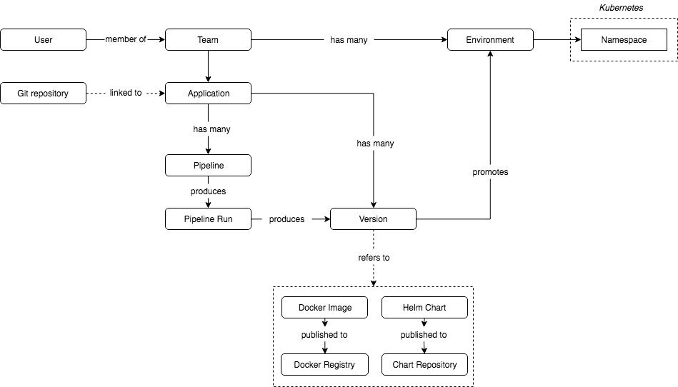

By Zachary Loeber
Development + Operations = DevOps
This model is deceptively simple. It’s component parts are:
Continuous Improvement
If this is not happening then you are on a different model.
A great conceptual model (Jenkins-x).

DevOps takes many forms but ultimately boils down to a handful of components working together;
The components above work for simple software releases.
But there is always ‘More’…
Anything more advanced usually include
The DevOps engineer will wrap these together with CI/CD into Pipelines
One can weave together pipelines with a number of tools;
The Azure PaaS solution for creating pipelines is Azure DevOps.
There are 2 parts to classic pipelines;
The build pipeline can reside as YAML code in the source repository (azure-pipeline.yaml).
The release pipeline is pretty much a manual affair (unless you are clever with json and apis)
The ‘Multi-Stage pipeline’ has been released into preview.
It overcomes some of the deficiences of the classic pipeline.
I deploy these exclusively.
The build process can be substantially more difficult than the deploy but is generally broken into the following parts
Build operations will be closely aligned with the chosen git strategy.
Common models include:
Just read the manpages, it is easy!
Git man page generator -> https://git-man-page-generator.lokaltog.net/
The stronger your pipeline is, the less you have to support it.
What makes a strong pipeline?
What is an outside dependency? (see if you can find the pattern);
What makes simpler pipelines?
What is Immutability in a pipeline?
There are many best practices for DevOps.
Here are a few from the field…
And a few more…
And yet more…
Finally,
If you implement DevOps correctly you WILL lose velocity, at first.
It gets better
Data schema is just as important as the code itself.
A few quick terms to know.
Some tools exist to facilitate CICD in pipelines. A few are;
Some IT not easily fit into the traditional DevOps CICD model:
This presentation made with: